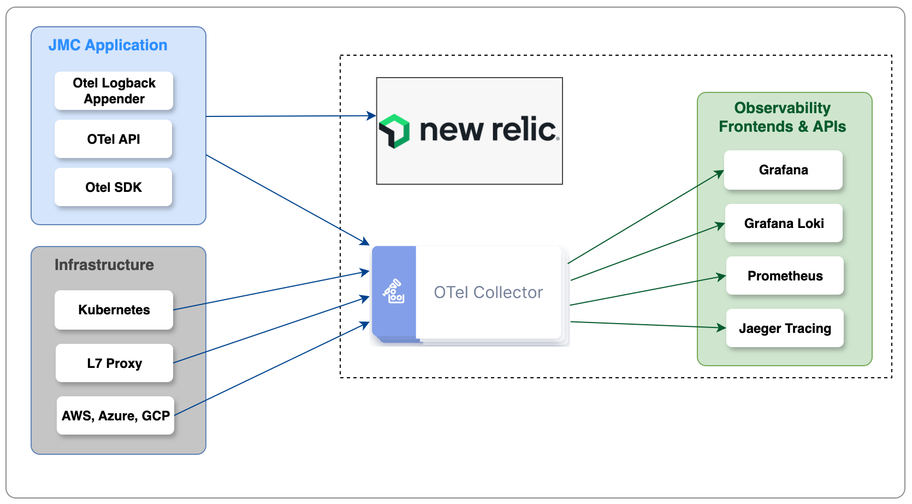
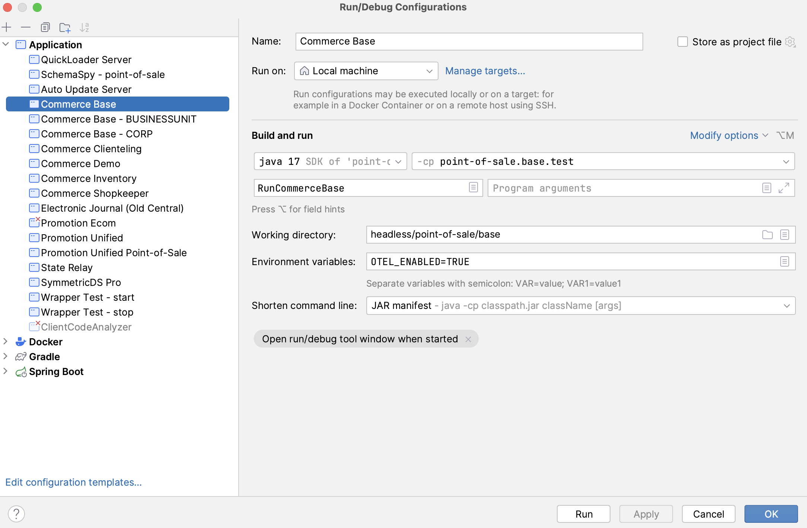
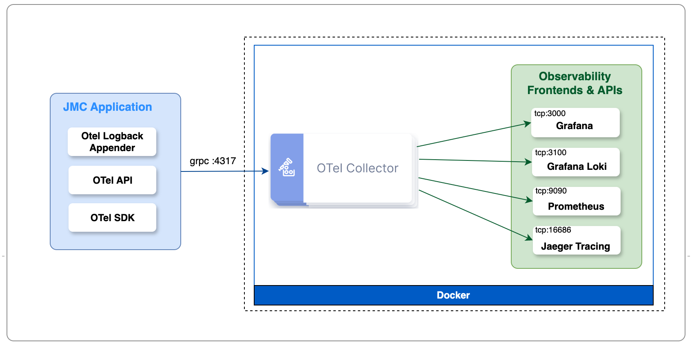
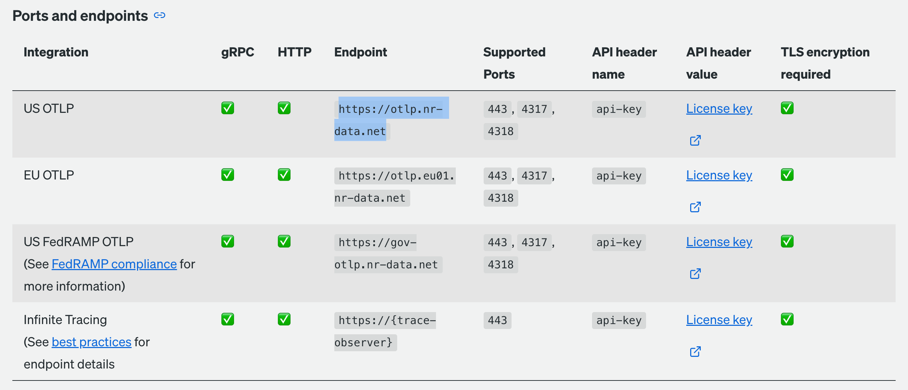

Telemetry
Open Telemetry¶
Overview¶
JMC supports OpenTelemetry (OTel). OTel is a vendor-neutral open source Observability framework for instrumenting, generating, collecting and exporting telemetry data such as traces, metrics and logs. As an industry-standard, OTel is supported by more than 40 observability vendors, integrated by many libraries, services and apps, and adopted by numerous end users.
Observability lets us understand the JMC application from the outside, by allowing the implementer to ask questions about the running application without knowing its inner workings. In addition, it allows us to easily troubleshoot and handle problems, and helps us answer the question, “Why is this happening?”
JumpMind supports this observability by properly instrumenting the application and emitting signals such as traces, metrics, and logs using and following the OTel tools and standards.
Logging¶
What it is- Logs are records of events that happen within an application or system. These events can include errors, warnings, and informational messages about what the system is doing at a point in time.Purpose- Logging is primarily used for diagnostic purposes. It helps developers and operators understand what happened in the past, troubleshoot issues, and audit system behavior.Characteristics- Logs are often verbose and provide detailed, contextual information about specific events. They can be unstructured (plain text) or structured (JSON, XML) and are generated by the application or system components.
Metrics¶
What it is- Metrics are numerical values that represent the state of a system at a certain point in time. They are used to measure various aspects of the system, such as performance, resource usage, and the rate of events.Purpose- Metrics are used for monitoring and alerting. They help operators track the health of the system, identify trends over time, and set thresholds for automatic alerts when potential issues arise.Characteristics- Metrics are aggregate data points, often collected at regular intervals. They are less detailed than logs but more efficient for monitoring system health and performance because they summarize data across time and dimensions.
Tracing¶
What it is- Tracing involves collecting detailed information about the execution paths of transactions or requests as they travel through a distributed system. Each part of the transaction's journey is captured in a trace, which includes spans representing individual operations or steps.Purpose- Tracing is used to understand the behavior of complex, distributed systems. It helps in pinpointing failures, performance bottlenecks, and understanding the flow of requests through microservices and other interconnected components.Characteristics- Traces provide a detailed, end-to-end view of a request or transaction, showing the interaction between different parts of a system. Tracing data is highly detailed and contextual, offering insights into the timing and outcome of each operation within a distributed system.
There are multiple components involved in implemeting the observability framework. Out of the box, for production use, JumpMind instruments the JMC application using the Otel Logback Appender for logging, and the Otel SDK/API for traces and metrics (pictured in the light blue box). Supporting infrastructure for the JMC Application can also provide telemetry of its own (pictured in the light gray box). These components in the gray and blue boxes are emitting open telemetry information. Once telemetry information is emitted, it needs to be routed, consumed, stored and displayed. The components involved in routing, consuming, storing and displaying telemetry data are the responsibility of the retailer and are shown below in the dashed box.

Running Open Telemetry Locally for Testing Purposes¶
When running the JMC out of the box base product through IntelliJ (Run Configuration "Commerce - Base"), open telemetry configuration for emitting open telemetry data from JMC can be set by changing the run configuration to add an environment variable OTEL_ENABLED = TRUE

Adding this environment variable will add the following spring profiles to the run configuration for Base Commerce.
See Configuring JMC to emit Open Telemetry Data for specifics on the configuration in each file/profile.
- otel-logger
- otel-metrics
- otel-tracer
- otel-pos
- otel-integration
As a reference implementation, JMC provides an open source observability stack that can be run side by side with the JMC application to understand the types of logging, metrics and traces available from the JMC platform. This reference implementation is not intended for production use. The reference implementation looks as follows:

Using Docker Compose, and the docker-compose.yml configuration file found in headless/core/misc, a multi-container application can be started that includes containers for the Otel Collector, Grafana, Grafana Loki, Prometheus and Jaeger Tracing. The images will be downloaded from the registry where your docker daemon points (Docker Hub, etc.) Steps to get things running include:
- Install Docker Engine and Docker Compose OR
- Install Docker Desktop (which includes Docker Engine and Docker Compose)
- Start Docker
- From the headless/misc/metrics directory of the checked out commerce project, run docker compose up
At this point, you will have a running multi-container application that has everything in the dashed box in the picture above.
Configuring JMC to emit Open Telemetry Data¶
JMC needs to be configured to emit telemetry data. JMC comes with preconfigured spring profiles that can be included to begin emitting telemetry data.
application-otel-logger.yml- Configuration for open-telemetry loggingapplication-otel-metrics.yml- Configuration for open-telemetry metricsapplication-otel-tracer.yml- Configuration for open-telemetry tracing
Adding these spring profiles to the run configuration for the JMC application will allow Open Telemetry to be configured and uesd.
Each of the spring configuration files looks similar to the following:
openpos:
otel:
logger:
enabled: true
exporter:
grpc:
endpoint: http://localhost:4317
Setting enabled: to true tells JMC to begin emitting telemetry data. The exporter: allow configuration of the JMC
component that emits data. It allows you to direct the JMC telemetry data to the observability platform of your choice
(Otel Collector, New Relic, etc.) and at its running location and listening port. By default, the JMC exporter uses the
grpc framework for emitting data to the observability framework.
Two additional coniguration files for open telemetry are:
application-otel-pos.yml- Configuration for application eventsappliction-otel-integration.yml- Configuration for export of telemetry data in OLTP. TODO: More details here
Example Logging Telemetry Data¶
TODO:
Example Metric Telemetry Data¶
TODO:
Example Trace Telemetry Data¶
TODO:
Configuring the Out of Box Open Telemetry Collection and Visualization Components for production instances¶
For production purposes, JMC telemetry data should be exported to the customer's observability tools of choice. This is
as simple as configuraing the exporter: for any / each of the logger, metrics and tracer configurations mentioned above.
SymmetricDS and Open Telemetry¶
SymmetricDS can use the Open Telemetry java agent to emit open telemetry data to the customer's observability platform. Configuring SymmetricDS to emit this data is as simple as setting the following properties or environment variables:
| Property | Environment Variable | Description |
|---|---|---|
| otel.exporter.otlp.endpoint | OTEL_EXPORTER_OTLP_ENDPOINT | specifies the endpoint on which the observability platform is listening for emitted events. I.E. http://yourobservabilityserver:yourportnumber |
| otel.exporter.otlp.headers | OTEL_EXPORTER_OTLP_HEADERS | specifies header variables (key value pairs) that may need added to the export request |
| otel.exporter.otlp.protocol | OTEL_EXPORTER_OTLP_PROTOCOL | the protocol for exporting otel data. i.e. grpc or http |
In addition to variables that are set across all (metrics, tracers, loggers), you can also set each property or environment variable by metric tracer or logger as follows:
| Property | Environment Variable | Description |
|---|---|---|
| otel.exporter.otlp.traces.endpoint | OTEL_EXPORTER_OTLP_TRACES_ENDPOINT | Specify export endpoint for traces only |
| otel.exporter.otlp.metrics.endpoint | OTEL_EXPORTER_OTLP_METRICS_ENDPOINT | Specify export endpoint for metrics only |
| otel.exporter.otlp.traces.endpoint | OTEL_EXPORTER_OTLP_LOGS_ENDPOINT | Specify export endpoint for logs only |
For additional details on the complete list of properties and environment variables, click here.
If using the JMC SymmetricDS container, these parameters can be specified via the helm chart
Data Available from the Otel java agent running with the SymmetricDS container includes:
Traces¶
HTTP Requests- Incoming and outgoing HTTP requests are automatically traced. This includes popular libraries like Apache HttpClient, Java's HttpURLConnection, and web frameworks like Spring Boot, Servlets, and JAX-RS.Database Calls- Database interactions via JDBC are traced, providing insights into SQL queries and their performance.Messaging- Interactions with messaging systems like Kafka, JMS, and RabbitMQ are traced, allowing you to see the flow of messages through your application.
Metrics¶
JVM Metrics- Garbage collection, memory usage, and thread counts.Throughput and Latency- For HTTP requests, database calls, and messaging systems, you can collect metrics on throughput (e.g., requests per second) and latency.Connection Pools- Metrics related to database and HTTP client connection pools.
Logs¶
Full SymmetricDS logs
Otel and New Relic¶
Setting up the JMC Otel exporter to send data to a New Relic is as simple as configuring the JMC OLTP exporters to point to the corresponding New Relic collector and providing your New Relic API Key as a header variable to the exporter. The URL used depends on the hosting location of your New Relic instance. Information for New Relic Endpoints can be found here. See below for an example:

Sample JMC exporter configuration for the above would look as follows:
openpos:
otel:
metrics:
enabled: true
exporter:
grpc:
endpoint: https://otlp.nr-data.net:4317
timeout: 10s
headers:
api-key: <your license key here>
Otel Metric Configuration¶
application-otel-integration.yml